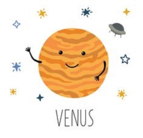
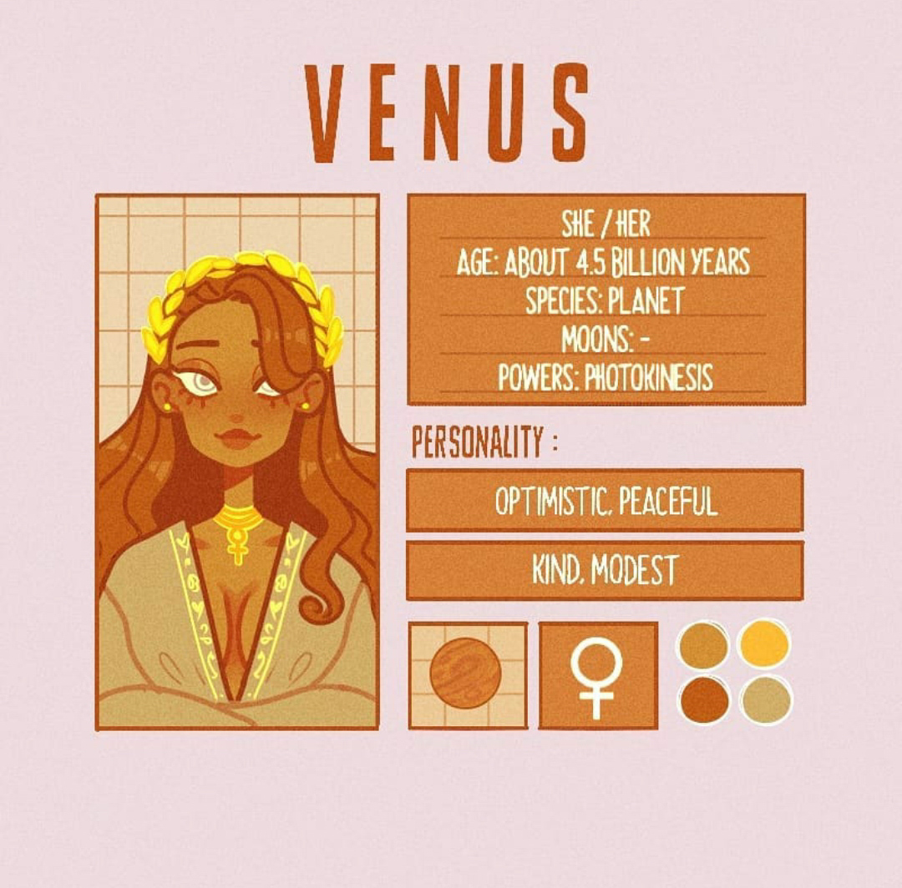

Привет!
Я Венера, вторая от Солнца планета, а так же второй по яркости объект на ночном небе. Я поднимась высоко над горизонтом, поэтому меня можно увидеть лишь незадолго до восхода и некоторое время после заката. За это меня называют Вечерней или Утренней звездой!
Температура на моей поверхности очень высокая - примерно +477° - из-за плотной атмосферы, состоящей в основном из углекислого газа. Она в 90 раз плотнее атмосферы Земли и создаёт парниковый эффект, не давая мой поверхности остывать. Вся моя атмосфера вовлечена в гиганский ураган и вращается вокруг меня со скоростью 120-140 м/с.
Я получила имя за своё сияние в честь римской богини красоты, любви и плодородия. Древние вавилоняне считали меня сестрой Луны и называли Светлой королевой неба.
В отличие от Земли, я вращаюсь по часовой стрелке, поэтому Солнце надо мной встаёт на западе, а заходит на востоке.
Я совершаю один оборот вокруг Солнца за 225 земных суток, а один оборот вокруг своей оси - за 243 земных дня.
Я очень похожа на Землю. Мой диаметр всего на 600 км меньше диаметра Земли, а масса составляет 80% массы вашей планеты. Учёные предполагают, что моё внутреннее строение также похоже на внутреннее строение Земли, однако у меня нет собственного магнитного поля, нет воды и нет возможности существования жизни.
Венера
- Пол: Женский
- Возраст: 4.5 биллионов лет
- Спутник: Нет
- Способности: Фотокинез(излучение яркого разрушительного света)
- Качества: Добрая, миролюбивая, скромная, оптимистичная
- Любимые цвета: Тёплые оттенки
